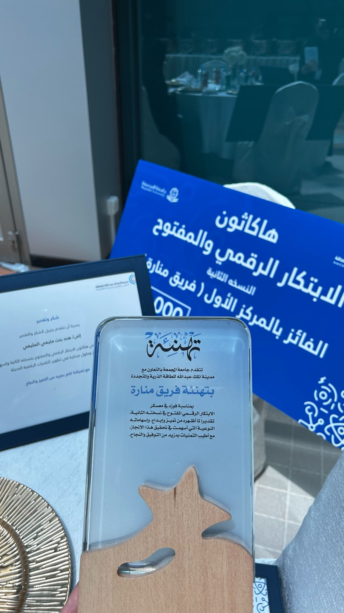

Turning data
into clarity.
I'm Hind Almolify, a Computer Science student specializing in Data Science. I explore how data, thoughtful design, and digital tools can make everyday work more effective.
Curious about the
why behind the numbers.
My work brings together data analysis, visual storytelling, and practical web development. From interactive dashboards to database-connected platforms, I enjoy making complex information easier to understand and use.
Currently pursuing a B.Sc. in Computer Science (Data Science Track) at Majmaah University, with experience from collaborative training and volunteer projects.
Projects that
tell a story.
Selected work in analytics, digital platforms, and innovation. Select a project to explore the details.
First place.
Digital innovation.
MANARA — Digital & Open Innovation Hackathon
Organized by Majmaah University in collaboration with King Abdullah City for Atomic and Renewable Energy (K.A.CARE).
Team achievement · MANARA project · 28 June 2026

Always learning.
Always building.
TechHub Club
Media Committee Member · 2025
Contributed to the club’s media committee activities.University Sports Club
Media & Graphic Design Member · 2025
Supported club communication and design work.IBM SkillsBuild — AI Industry Immersion Bootcamp
Industry Immersion · 10-week program · 2026
Completed a 10-week applied AI program and collaborated on MediaLens, a prototype for turning social media data into insights. The project was not launched.View MediaLens team prototype ↗ / عرض النموذج الأولي لمشروع MediaLens
Data Analytics Virtual Work Experience
stc × Misk collaboration · 2026
Analysis, visualization, and forecasting on a project dataset.TechHub Club
Vice Chair of the Media Committee · 2026
Supporting media committee coordination and communication activities.University Sports Club
Web Developer · 2026
Built a practical digital membership solution for the club.Innovation & Entrepreneurship Unit
Chair of the Media Committee
Part of the College of Computer and Information SciencesLearning by building.
A focused workshop followed by hands-on exploration of AI-assisted website creation.
Vibe Coding Workshop
Artificial Intelligence Pioneers · Summer Program
I attended a Vibe Coding workshop, where I learned to build websites with Claude by describing an idea and refining it step by step. This portfolio is a practical example of that approach, developed in the same way and improved further after the workshop.
Explore this portfolioIBM SkillsBuild — AI Experiential Learning Lab: Industry Immersion
IBM SkillsBuild · 10-week program
Completed a 10-week applied AI industry immersion program, including the team MediaLens prototype.
Data Analytics Virtual Work Experience — STC × Misk
Misk Foundation · stc · 7 hours
Completed a virtual work experience in data analytics covering user behavior analysis, machine learning, prediction, and data visualization.
Have a project
in mind?
I'm interested in opportunities where data and digital solutions make a meaningful difference.